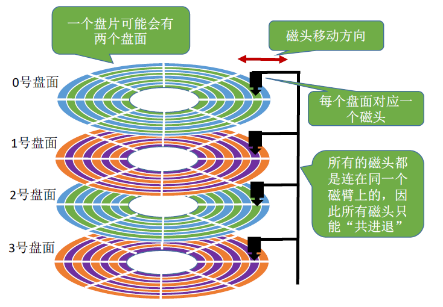
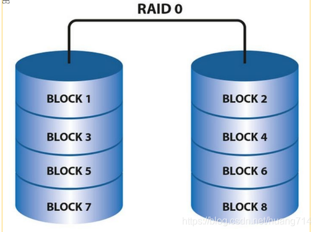
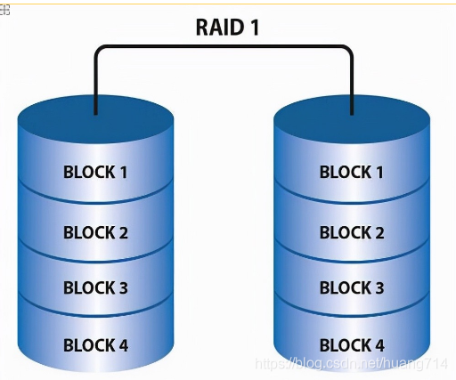
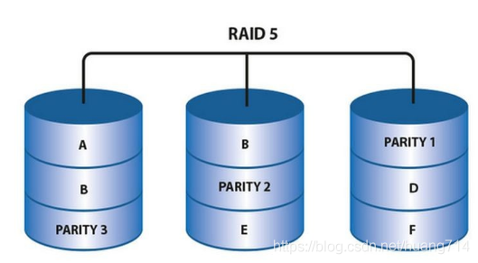
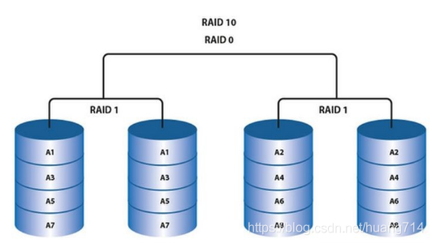
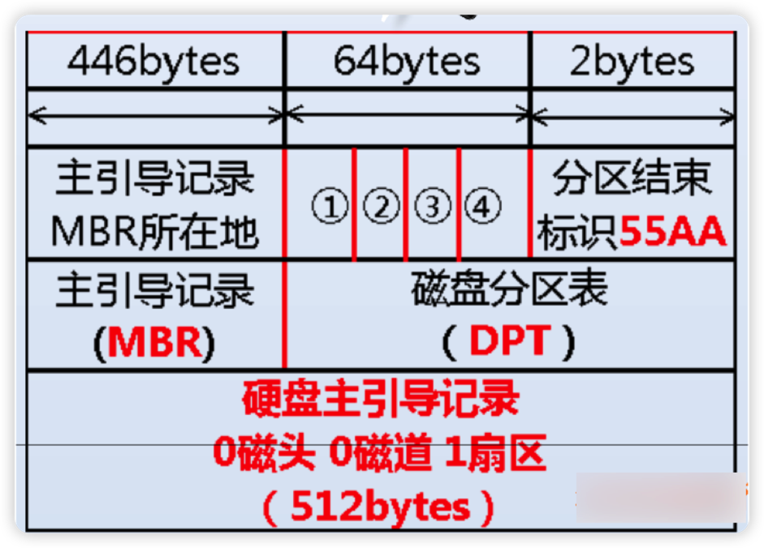
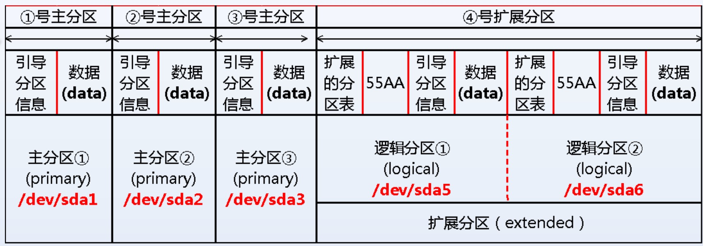
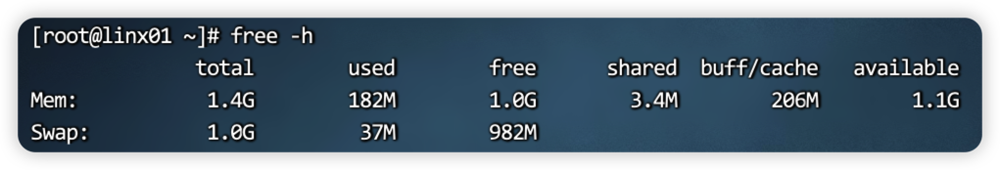
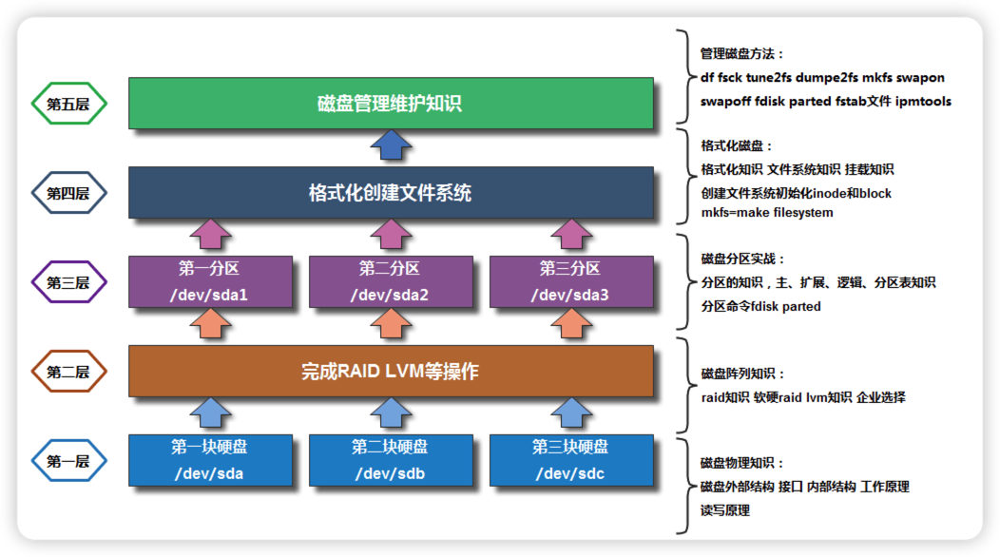

前言
磁盘相关的知识是Linux系统中的重头戏，需要了解的点比较多。但现在随着云计算的兴起，在很多企业中很少碰到物理服务器了也就不会接触到屋里磁盘。所以更多的是停留在使用的层面。下面我们就系统的回顾一下linux的磁盘知识。
磁盘管理基础
磁盘分类与接口
磁盘分类:
- 机械硬盘HDD
- 固态硬盘SSD
磁盘接口分类:
| 类型 | 磁盘类型 | 适应场景 |
|---|---|---|
| sata | 机械、固态 | 家用更多 |
| sas(由scsi改进而来) | 机械、固态 | 企业更多 |
| pic-e | 固态 | 企业、家用 |
注:以上只列举了目前家庭企业比较常见的，实际上现在还有较新的M2接口，速度也更快，感兴趣的可以自己了解下。
企业磁盘选型
在企业场景中，选择磁盘的时候 要考虑很多方面，包括性能、性价比等，要根据不同的场景选择合适的磁盘，也是为了节省成本。
| 接口 | 应用场景 | |
|---|---|---|
| sata | 企业内部使用,存放备份. 线下业务(给自己内部人员使用) | 4tb 6tb 7.2k转 * 8 |
| SAS | 企业标配,线上业务(线上环境,生产环境)使用(提供给用户环境) | 300g 600g 900g 15k硬盘 *8 |
| 固态硬盘(pci- e/sas/sata) | 访问量巨大(并发高). 数据量不是很大. (架构优化策略:把用户经常访问的数据存 放在固态) | 500g 1tb 2tb *4 |
磁盘内部结构
机械硬盘:

固态硬盘: 闪存颗粒 nand flash
上述只是粗略的描述，固态硬盘的内部结构比较复杂。感兴趣的可以寻找其他资料。
固态VS机械
| 指标 | 机械硬盘 | 固态硬盘 |
|---|---|---|
| 性价比 | 容量大价格低 | 容量小价格高 |
| 稳定性 | 抗击打能力弱 | 抗击打能力高 |
| 速度 | 读写速度稍慢 | 读写速度很快 |
| 数据安全 | 数据恢复易 | 数据恢复难 |
| 寿命 | 无限 | 1-2w次 |
RAID
我们都知道现在的互联网时代，尤其对于一家互联网公司而言，数据就是核心，数据存储在磁盘上，如果磁盘坏掉了 那公司不是要瘫痪掉吗。所以RAID技术就是来解决数据安全的。如果一块磁盘坏掉，我们是不是有其他方案能替换掉这块磁盘来作一个兜底。RAID相当于是一个节点上的磁盘的保障方案。同理，如果一个节点坏掉呢？那么就要使用其他节点 也就是分布式了。
概念
- 磁盘冗余阵列 RAID 物理服务器的硬盘,通过raid管理,才能使用。
- 常见的raid级别: raid 0 , raid 1 , raid 5,raid 10
| 至少几块硬盘 | 容量 | 冗余 | 性能 | |
|---|---|---|---|---|
| raid 0 (条 带) | 1 | 所有硬盘容量总和. | 最低,没有冗余. | 最快的. |
| raid 1 (镜 像) | 2块硬盘(制作的时候,1次只能给2块硬 盘做raid1) | 一半. | 冗余100% | 写入性能较慢,读取类似于单 块硬盘. |
| raid 5 | 至少3块硬盘 | 损失n-1 (n硬盘总 数,n>=3) | 损坏1块. | 读取性能还可以,写入较慢. |
| raid 10 | 至少需要4块硬盘 | 减半 | 损坏一半,但是不能在1 个组里. | 读写性能强悍 |
我们来看几张图，更容易理解 ：




RAID与LVM
RAID相当于在物理层面，将多块磁盘进行组合给上层使用。而LVM 逻辑卷 是在软件层面也就是 逻辑上的 去进行多个磁盘块的整合 以达到屏蔽效果，它的好处是 可以支持动态扩容磁盘。缺点就是 使用起来会慢。由关LVM的细节，此处就不多介绍了，以后会详细介绍。
磁盘分区
磁盘分区概述
- 磁盘的第1个扇区: 0磁头(盘面)0磁道1扇区 1个扇区 512字节
- MBR 磁盘的引导程序(主引导记录) : 引导系统启动.
- 分区表:存放分区开始结束信息

主分区,扩展分区,逻辑分区·
- 主分区: 最多有4个,每个占用16字节分区表空间
扩展分区:主要用来解决主分区最多4个. 主分区无法直接存放数据与使用. 如果要使用需要在扩展分区中创建逻辑分区. 扩展分区在一个磁盘中只有1个.
逻辑分区:需要先创建扩展分区. 使用逻辑分区存放数据.

分区命名规则
磁盘名字:/dev/sda(第一块磁盘不做分区) 、/dev/sda1、/dev/sda2
第1块硬盘 /dev/sda
第2块硬盘 /dev/sdb
分区命名规则:
- 主分区或扩展分区 1-4 /dev/sda1-4
- 逻辑分区从5开始 /dev/sda5
例子:
- 第3块sata硬盘的第1个主分区 /dev/sdc1
- 第4块sas硬盘的第2个逻辑分区 /dev/sdd6
MBR vs GPT
MBR与GPT可以理解分两种磁盘分区的标准GPT可以解决MBR的问题。
- MBR主引导记录,磁盘分区格式 。磁盘大小不能大于2tb,如果大于2tb则无法使用.
- GPT分区表格式,解决问题. 解决系统支持大硬盘的问题。主分区随便用,不用区分主分区,扩展分区逻辑分区.
| MBR VS GPT | 支持的主分区数量 | 支持的硬盘大小 | 磁盘分区命令 |
|---|---|---|---|
| MBR | 支持的主分区+扩展分区 最多 4个 | 小于2tb硬盘 | fdsik 只支持mbr |
| GPT | 可以理解无限 | 可以各种容量的磁盘 | parted/gdisk 支持 gpt和mbr |
格式化
格式化的目的就是创建一个文件系统，分区之后必须要格式化才能使用。
| 系统类型 | 文件系统 |
|---|---|
| Linux | ext3(centOS5)、ext4 (C6 ) 、xfs(C7),btrfs |
| Windows | fat32, ntfs |
格式化常用的命令就是mkfs。 日后我们会在实战中详细的进行 的演示。
Swap
Swap 是在 内存不足的时候临时充当内存

总结
我们这次只是对磁盘体系进行一个概要的梳理，命令的使用是细节，更重要的是让知识成体系

简单来讲，对于一块磁盘使用，只需要三步走
- 分区 :fdisk/parted/gdisk,
- 格式化 :mkfs.xfs
- 挂载 ： 临时挂载:mount/umount 永久挂载： /etc/rc.local /etc/fstab

...
...
This is copyright.